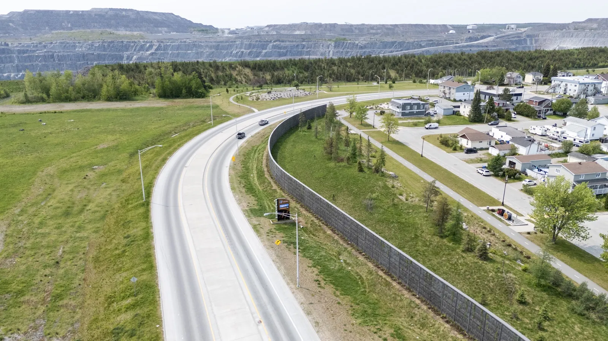
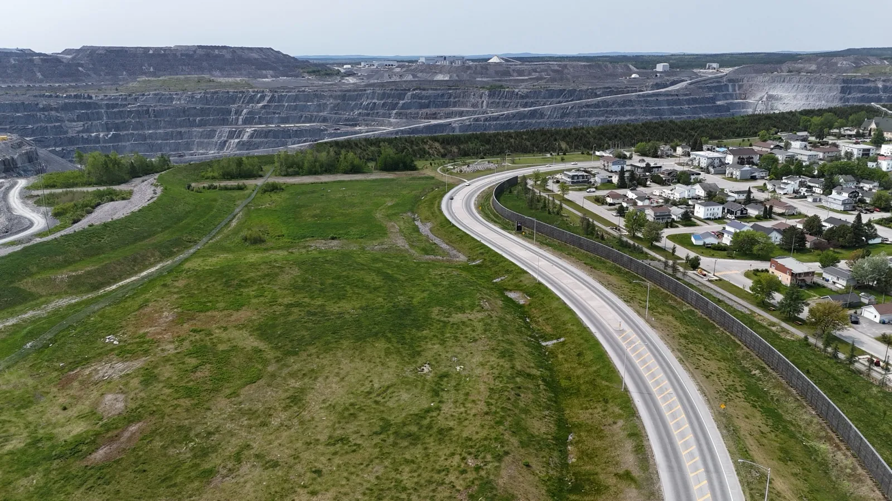
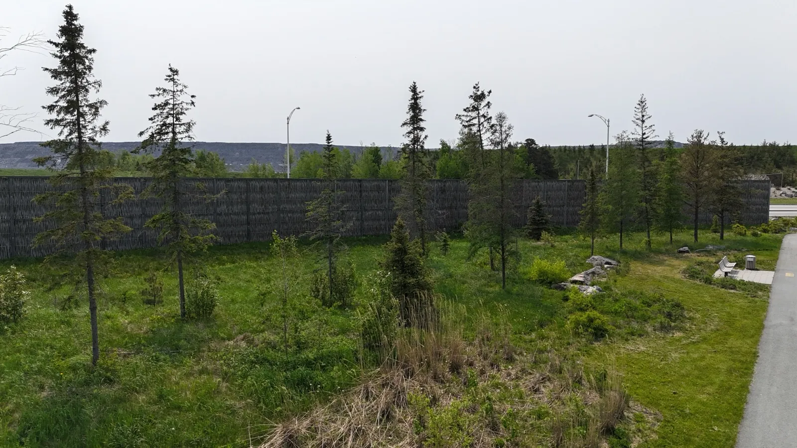

Le contexte
Dans le cadre de la déviation de la route 117, la Mine Canadian Malartic devait acquérir un écran acoustique pour assurer la quiétude des habitants de Malartic tout en respectant l'environnement et l'esthétisme du paysage.
Le mur devait s'intégrer durablement dans un secteur urbain habité, résister aux conditions abitibiennes et écarter les enjeux récurrents des écrans conventionnels — notamment les graffitis.
La solution mise en place
Ramo a conçu, fabriqué et installé un mur antibruit Pilebyg® à double façades en saules écorcés tressés. Le système combine :
- une structure porteuse en acier galvanisé
- des panneaux absorbants intégrant laine minérale
- un parement extérieur en saule écorcé tressé sur les deux faces
L'ouvrage de 350 m de long × 5 m de haut a été installé directement sur sol, avec un design non réceptif aux graffitis et adapté à l'esthétique du paysage abitibien.

Résultats et performance
Atténuation sonore
- diminution mesurée de 5 dBA, conforme à l'atténuation prévue dans l'étude d'impact du projet
- quiétude restaurée pour le secteur résidentiel de Malartic situé en bordure du tracé
Empreinte carbone
- 12 433 kg de CO₂ captés par les tiges de saule incorporées dans les panneaux
- solution carbo-négative — chaque tige capte ~3 kg de CO₂ pendant son cycle de croissance

Témoignage client
« Ramo a contribué au succès de la conception et de la construction du mur antibruit construit dans le cadre des travaux de la déviation de la route 117. Votre entreprise s'est démarquée par sa capacité à s'adapter à nos besoins spécifiques tout en respectant le budget prévu pour la réalisation du projet ainsi que son échéancier. Le résultat final correspond en tout point à l'atténuation sonore attendue lors de l'étude d'impact, soit une diminution de 5 dBA. »
Christian Roy, ing. — Directeur général, Mine Canadian Malartic
François Fortin, ing. — Surintendant travaux civils, Mine Canadian Malartic
Co-bénéfices
Non réceptif aux graffitis
Le parement tressé en saule écorcé n'offre pas de surface lisse exploitable — un avantage durable sur les écrans conventionnels.
Intégration paysagère
Matériau et texture naturels qui respectent l'esthétisme du paysage abitibien et limitent l'impact visuel.
Acceptabilité sociale
Solution mieux perçue par les habitants de Malartic qu'un mur conventionnel en béton ou en bois traité.
Carbo-négatif
Captation de 12 433 kg de carbone par les saules — un actif climatique en plus de l'atténuation sonore.

Lecture technique du projet
Un enjeu similaire ?
Contactez-nous.
Notre équipe est disponible pour discuter de vos besoins et vous proposer la solution adaptée.